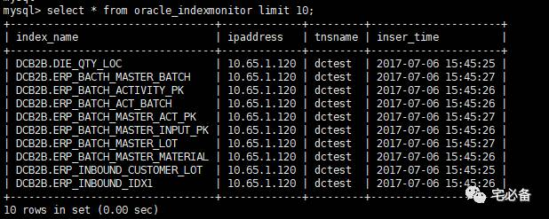

将Oracle已使用过索引存入MySQL中
这个专题讲述如何讲这些监控数据保存在MySQL中为日后所用
上节讲到如何利用Python获取Oracle已使用过的索引名称
这节讲如何将他们存入MySQL数据库中
环境设置
Linux系统为 Centos 6.8
Python环境为 Python 3.6
MySQL版本 MySQL 5.7 (GA)
连接Oracle模块:cx_Oracle
连接MySQL模块:PyMySQL
存入MySQL脚本内容
将上节获取Oracle索引的脚本增加存入MySQL数据库的代码
脚本名称依然为:checkindex.py
#!/usr/bin/python
#coding=utf8
import cx_Oracle
import pymysql
from sendmail_phone import *
def getindex(oracle_cursor):
fp=open('/home/oracle/script/getindex.sql','r')
fp1=fp.read()
s=oracle_cursor.execute(fp1)
fp.close()
result=[]
row=s.fetchall()
for i in row:
result.append(i[0]+'.'+i[1])
return result
if __name__=="__main__":
mailcontent=[]
ipaddress='10.60.14.70'
username='sys'
password='sys_password'
port='1527'
tnsname='NP1'
#首先获取v$sql_plan中的索引名称保存至变量data
try:
oracle = cx_Oracle.connect(username+'/'+password+'@'+ipaddress+':'+port+'/'+tnsname ,mode=cx_Oracle.SYSDBA)
except Exception as e:
content= (tnsname+' is Unreachable,The reason is '+ str(e)).strip()
print (content)
else:
oracle_cursor = oracle.cursor()
data=getindex(oracle_cursor)
oracle_cursor.close()
oracle.close()
#接下来连接本地MySQL数据库
mysql = pymysql.connect("localhost","root","Oracle@123","oracle" )
mysql_cursor = mysql.cursor()
#遍历每个索引
for index in data:
#首先检查该索引是否存在于数据库中
checkifexist='select count(*) from oracle_indexmonitor where index_name=\''+index+'\' and ipaddress=\''+ipaddress+'\' and tnsname=\''+tnsname+'\''
mysql_cursor.execute(checkifexist)
count = mysql_cursor.fetchone()
#如结果等于0说明该索引未记录，则插入到MySQL数据库中
if int(count[0])==0:
try:
insertsql='insert into oracle_indexmonitor(index_name,ipaddress,tnsname) values(\''+index+'\',\''+ipaddress+'\',\''+tnsname+'\')'
mysql_cursor.execute(insertsql)
mysql.commit()
except:
mysql.rollback()
mysql_cursor.close()
mysql.close()
思路为先获取索引信息
-
再遍历每个索引
-
针对不在MySQL的数据库的存入MySQL数据库中
-
经过一段时间的运行即可知道哪些索引未被使用过
运行结果
运行完脚本后我们查看MySQL数据库，应该可以看到表里应该有数据，而且没有重复数据
由于v$sql_plan中的数据可能被刷出内存空间，我们需要较为频繁的运行该程序
我在实际监控中是每隔十五分钟，大家可以使用crontab 来设定
这样经过一段时间(半年甚至一年)，可知道哪些索引未被使用过


源码位置
全部代码请查看我的Github主页
https://github.com/bsbforever/wechat_oms
至此该专题已经讲解完毕，介绍了监控索引的一种思路，日常运维中可横向展开对其他指标进行监控，这个下次说。